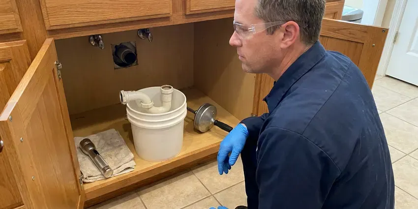

Sewer Repair in Sheboygan, WI
Fast diagnosis, honest options and clean digs. That is how we handle sewer repair for homeowners and property managers in Sheboygan, WI.
- Same-Day Sewer Camera Inspections
- Written Repair Warranty
- Licensed Wisconsin Plumbing Contractor
- Long-Lasting Repairs

Need Fast Sewer Repair in Sheboygan, WI?
From diagnosis to lasting repair, HKV Plumbing delivers quality service you can rely on.
Reliable Sewer Repair in Sheboygan, WI Backed by Camera Inspections
HKV Plumbing repairs the main sewer line that carries everything from your home to the city tap or septic tank. We start with a high-resolution camera and locator so we know the depth, material and exact spot of the failure. Then we give you a written price for a spot repair, a section replacement or a trenchless repair.
Our expertise includes:
- Trenchless Sewer Line Repair
- Precision Pipe Repair and Replacement
- HD Camera Inspections

Additional Plumbing Repair Services in Sheboygan, WI
We offer expert plumbing repair services across Sheboygan, WI to fix leaks, restore flow, and keep your system running smoothly.


Customers
Why Choose HKV Plumbing for Sewer Repair in Sheboygan, WI?
Our plumbers carry cameras, locators, hydro-jetters and excavation gear on every sewer call. That means one visit to diagnose, one firm quote and one crew that sees the job through to final inspection.
- Right-Sized Fixes, We repair a single bad joint when that is all it needs instead of pushing a whole new line.
- Video Proof, You see the crack, root mass or belly on screen before you approve a single repair.
- Advanced Tools, Our technicians use state-of-the-art equipment for accurate diagnosis and effective repair of all sewer line problems.
Citywide Coverage
Our service coverage means that no matter where you are in Sheboygan, our expert plumbers can reach you for timely sewer repair. We are committed to providing reliable plumbing solutions across the entire Sheboygan community.
Experienced Team
Every lead plumber on our sewer crew is trained on locating equipment, shoring and safe trench practices. They have dug through rock, hardpan and compacted fill, so tough ground does not slow them down.
Safety-First Approach
When HKV Plumbing takes on a sewer repair, we prioritize the safety of your family and our technicians. Our procedures are designed to meet or exceed all industry safety standards, including proper excavation and handling of materials, for code-compliant and secure work in your Sheboygan home.
Trusted Certified Sheboygan Plumbing Services Professionals
At HKV Plumbing, we take pride in providing certified plumbing services throughout Sheboygan, WI. Backed by leading industry credentials, our experienced plumbers combine technical skill with genuine customer care. Whether it is repair, installation, or maintenance, we follow strict safety and quality standards to deliver long-lasting results you can trust.
Call Us Now PHCC Plumbing Contractor Recognition
PHCC Plumbing Contractor Recognition Better Business Bureau (BBB) Accreditation
Better Business Bureau (BBB) Accreditation Angi Certified Pro
Angi Certified Pro ISO 9001 Quality Management Certification
ISO 9001 Quality Management CertificationLasting Sewer Repair Services in Sheboygan, WI
Video Camera Sewer Inspection in Sheboygan
Before any repair, we use high-resolution video camera inspection to accurately locate and assess sewer line damage. This involves inserting a flexible rod with a camera into your sewer line, allowing us to see blockages, cracks, root intrusion or pipe collapses in real time. This non-invasive method prevents unnecessary digging and helps us provide a precise diagnosis and repair plan. It's key for understanding issues in older homes in Sheboygan and identifying problems like bellied pipes or collapsed sections.

Sewer Repair for Commercial Properties in Sheboygan, WI
HKV Plumbing provides professional sewer repair services for commercial businesses across Sheboygan, WI. We understand that commercial sewer issues can lead to significant operational disruptions and health hazards. Our team offers prompt, efficient service to minimize downtime, from grease trap line blockages to main sewer line failures. We work fast so your business can resume normal operations with a reliable sewer system.
Sewer Pipe Replacement Options in Sheboygan, WI
When repairs are no longer sufficient due to extensive damage, age or material failure, sewer pipe replacement becomes necessary. We offer several replacement options, including traditional trenching and modern trenchless technologies like pipe bursting or pipe lining. Our experts will assess your situation and recommend the most cost-effective and least disruptive solution for your Wisconsin property, giving you a long-lasting new sewer line.
Sewer Repair Cost Comparison in Sheboygan, WI
A single spot repair is the most affordable fix when the rest of the line is sound. Pipe lining costs more per foot but avoids excavation and works well for long runs under driveways or landscaping. Full replacement is the right call when the pipe is Orangeburg, badly bellied or broken in several places. We lay out all three options with real numbers so you can compare cost against how long the repair will last.
Root Intrusion Repair in Sheboygan, WI
Tree and shrub roots go right for the moisture and nutrients leaking from old sewer joints. Once inside, they grow into dense mats that catch paper and waste. We cut the roots with a mechanical cutter or hydro-jetter, then repair or seal the joint so they cannot come right back. For lines with many rooted joints, we will show you when lining or replacement makes more sense than ongoing cleaning.
Sewer Camera Inspection in Sheboygan
Every sewer repair starts with a look inside the pipe. We run a self-leveling camera from your cleanout or a pulled toilet and record the full length of the line. A sonde in the camera head lets us mark the exact location and depth of every problem on the surface. You get a copy of the video and a plain-language summary of what we found. This step alone frequently saves homeowners from paying for repairs they do not need.
Sewer Vent Pipe Repair in Sheboygan, WI
While often overlooked, the sewer vent pipe is crucial for proper drainage and preventing sewer gas buildup. Issues with vent pipes, such as blockages from animal nests or damage from storms, can lead to slow drains, gurgling noises and foul odors. HKV Plumbing diagnoses and repairs vent pipe problems, ensuring your entire drainage system works correctly and safely and protecting good indoor air quality.

Orangeburg and Cast Iron Sewer Replacement in Sheboygan
Some older homes still have Orangeburg pipe, a tar-paper material that flattens and blisters over time. Cast iron from the same era corrodes from the inside and scales up until little flow remains. When a camera shows widespread failure, patching is a waste of money. We replace the line in sections or end to end with PVC, and we can often use trenchless methods to avoid tearing up the whole yard.
Sewer Repair Near Me in Sheboygan, WI
When you search for sewer repair near me, you want a crew that can show up, find the problem and fix it without a week of back and forth. Our local plumbers keep cameras and repair materials on the truck so most diagnoses happen on the first visit. We give you a fixed price before work starts.
No matter where you are in the greater Sheboygan area, our skilled plumbers are ready to address your sewer repair concerns promptly and professionally. We understand the urgency of sewer problems and strive to deliver efficient, effective service right to your doorstep.
HKV Plumbing at a Glance
- Licensed and insured plumbers serving Sheboygan, WI
- Same-day appointments and 24/7 emergency response
- Clear written estimates, no hidden fees
- 4.8-star rated by 448+ Wisconsin customers
Sheboygan Map
Sheboygan Information
- Population
- 49,686
- Area codes
- 920/414/262
- Service area
- Sheboygan and communities within 40 miles
- Nearby
- Oshkosh, Milwaukee, Wauwatosa, Appleton
Sewer line integrity matters in Sheboygan, WI, where soil movement and tree growth can put pressure on pipes and lead to cracks, blockages and root intrusion that need expert repair.
Expert Services
Trust our professionals for reliable HKV Plumbing solutions in Sheboygan, WI.
Our Specialized Plumbing Services in Sheboygan, WI
At HKV Plumbing, we provide a complete range of plumbing services across Sheboygan, WI. From leak detection to full system installations, our team ensures fast, precise, and affordable service for both residential and commercial properties. Explore our core services below:


Here Is How Our Sewer Repair Process Works in Sheboygan, WI
Here is what to expect from the first phone call to the final walkthrough.
Request a Quote
Contact HKV Plumbing at (414) 432-4641 to schedule an appointment. Our friendly staff will gather details about your sewer issue and set up a convenient time for a technician to visit your property.
Diagnosis and Estimate
Our technician will conduct a thorough inspection, often using video camera technology, to correctly diagnose the sewer problem. We will then provide a clear, upfront estimate for the repair, explaining all your options.
Expert Repair
Once you approve the estimate, our team will carry out the agreed-upon sewer repair. We use quality materials and proven techniques for a durable solution that meets all local codes.
Frequently Asked Questions About Sewer Repair in Sheboygan
A single spot repair typically runs $1,500 to $4,500 depending on depth and access. Trenchless lining usually costs $80 to $250 per foot, and full replacement of a typical residential line ranges from $5,000 to $15,000. We give you a written quote after the camera inspection is done.
Usually not. Camera locating lets us dig only at the damaged spot, and many problems can be fixed through a single pit or with trenchless methods. We protect landscaping and restore the area when we are done.
Trenchless sewer repair is a method that allows for pipe repair or replacement without major digging. Techniques like pipe lining, also called cured-in-place pipe, or pipe bursting minimize disruption to your yard and landscaping. It's an excellent option for preserving your property while fixing underground pipes.
Trenchless sewer repair is a method of repairing or replacing sewer lines with minimal digging, often requiring only one or two access points. It involves techniques like pipe bursting, where a new pipe is pulled through the old one, or pipe lining, where a resin-impregnated liner is inserted and cured inside the existing pipe. This preserves your landscaping and is less disruptive than traditional methods.
In most cases, yes, major sewer line repairs or replacements in Sheboygan require a plumbing permit under local code. This ensures the work is performed to proper standards and inspected for safety and compliance. HKV Plumbing will handle all necessary permitting on your behalf, making the repair hassle-free for you.
Common causes include tree root intrusion, especially from older trees in established neighborhoods. Full basements are standard in Wisconsin homes, and sump systems are common where clay or high groundwater holds water near the foundation. Deterioration of older cast iron or clay pipes, grease buildup from improper disposal and foreign objects flushed down drains also contribute to blockages and breaks.
Yes, major sewer line repairs or replacements in Sheboygan, WI usually require a plumbing permit from the local authorities. This ensures the work meets safety and code standards. HKV Plumbing handles all necessary permitting for you, so your repair is fully compliant.
Key signs you need sewer repair include multiple slow drains or frequent backups, gurgling noises from toilets or drains, foul sewer odors in or around your home, soggy spots in your yard or an unexplained increase in your water bill. If you notice any of these, it's smart to call for an inspection.
What People Are Saying About Our Plumbing Experts?

Daniel K.
A pipe burst at 11 pm and they actually answered. The plumber showed up within the hour, shut everything down, and had us back to normal the next morning. Could not ask for more.
Emergency Plumbing · Green Bay, WI
Mark T.
When our office needed drain cleaning, HKV Plumbing provided quick, reliable service. The plumber arrived on time and made sure every drain flowed perfectly before leaving. Very satisfied.
Drain Cleaning · Sheboygan, WI
Sofia M.
Two new toilets installed in one visit, no mess left behind, and the tech even adjusted a faucet he noticed was dripping. Fair pricing and really friendly.
Toilet Installation · West Allis, WILaura S.
I scheduled a water heater replacement, and the team made the process smooth and affordable. The new unit works perfectly, and they cleaned up after completing the job.
Water Heater Replacement · Wauwatosa, WI
Robert G.
The trenchless sewer replacement saved our front yard. They walked us through the camera inspection footage first so we knew exactly what we were paying for.
Sewer Line Replacement · Wauwatosa, WIJames P.
Our commercial plumbing system had a leak under the sink, and HKV Plumbing handled it professionally. The plumbers arrived quickly and restored everything without disruption to our customers.
Commercial Plumbing · West Allis, WI